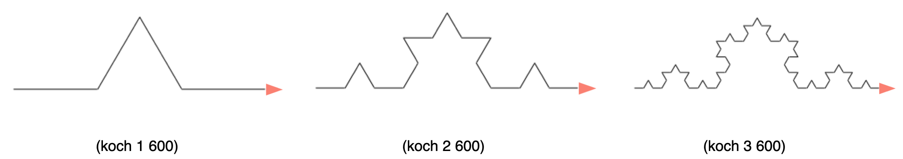
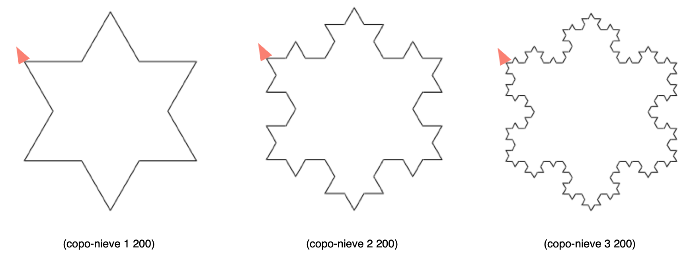

Práctica 5: Procedimientos recursivos e iterativos¶
Entrega de la práctica¶
Para entregar la práctica debes subir a Moodle el fichero
practica05.rkt con una cabecera inicial con tu nombre y apellidos, y
las soluciones de cada ejercicio separadas por comentarios. Cada
solución debe incluir:
- La definición de las funciones que resuelven el ejercicio.
- Un conjunto de pruebas que comprueben su funcionamiento
utilizando el API
RackUnit.
Ejercicios¶
Ejercicio 1¶
a) Implementa una versión recursiva iterativa de la función
(concat lista) que toma como argumento una lista de cadenas
y devuelve una cadena resultante de concatenar todas las palabras de
la lista.
La función concat deberá llamar a la función
concat-iter que es la que implementa propiamente la versión
iterativa usando recursión por la cola.
Ejemplo:
1 2 | |
b) Define utilizando recursión por la cola la función (min-max
lista) que recibe una lista numérica y devuelve una pareja con el
mínimo y el máximo de sus elementos.
Ejemplo:
1 2 | |
Ejercicio 2¶
a) Implementa utilizando recursión por la cola las funciones
expande-pareja y expande-parejas de la práctica 3.
Ejemplo:
1 2 3 | |
b) Implementa utilizando recursión por la cola la función (rotar k
lista) que mueve k elementos de la cabeza de la lista al
final. No es necesario utilizar una función iterativa auxiliar,
puedes hacer que la propia función rotar sea iterativa usando el
parámetro lista como el parámetro donde acumular el resultado.
Ejemplo:
1 | |
Ejercicio 3¶
a) Implementa utilizando recursión por la cola la función
mi-foldl que haga lo mismo que la función de orden superior
foldl.
1 2 | |
b) Implementa una versión con recursión por la cola del predicado
(prefijo-lista? lista1 lista2) que comprueba si la primera lista es
prefijo de la segunda. Suponemos que siempre la primera lista será más
pequeña que la segunda.
Ejemplos:
1 2 | |
Ejercicio 4¶
Realiza una implementación que utilice la técnica de la memoization del algoritmo que devuelve la serie de Pascal.
1 2 3 | |
Ejercicio 5¶
a) Usando gráficos de tortuga implementa la figura recursiva conocida
como curva de Koch. Debes definir una función recursiva (koch nivel
trazo) que dibuje una curva de Koch de nivel nivel y de longitud
trazo.
Como pista, para dibujar una curva de Koch de nivel n y longitud l, se deberán dibujar 4 curvas de Koch de nivel n-1 y longitud l/3. En estas 4 curvas consecutivas, el ángulo de inclinación de la segunda curva con respecto a la primera es de 60 grados.
Puedes ver ejemplos de las curvas de nivel 1, 2 y 3 en las siguientes figuras:

b) Implementa la función (copo-nieve nivel trazo) que, usando la
función anterior, dibuje el copo de nieve de
Koch
que puedes ver en los siguientes ejemplos.

Ejercicio 6¶
Define la función (alfombra-sierpinski tam) que construya la
Alfombra de Sierpinski (una variante del Triágulo de Sierpinski que
hemos visto en teoría) de lado tam píxeles utilizando gráficos de
tortuga.
Por ejemplo, la llamada a (alfombra-sierpinski 500) debe dibujar la
siguiente figura:

Lenguajes y Paradigmas de Programación, curso 2019-20
© Departamento Ciencia de la Computación e Inteligencia Artificial, Universidad de Alicante
Domingo Gallardo, Cristina Pomares, Antonio Botía, Francisco Martínez